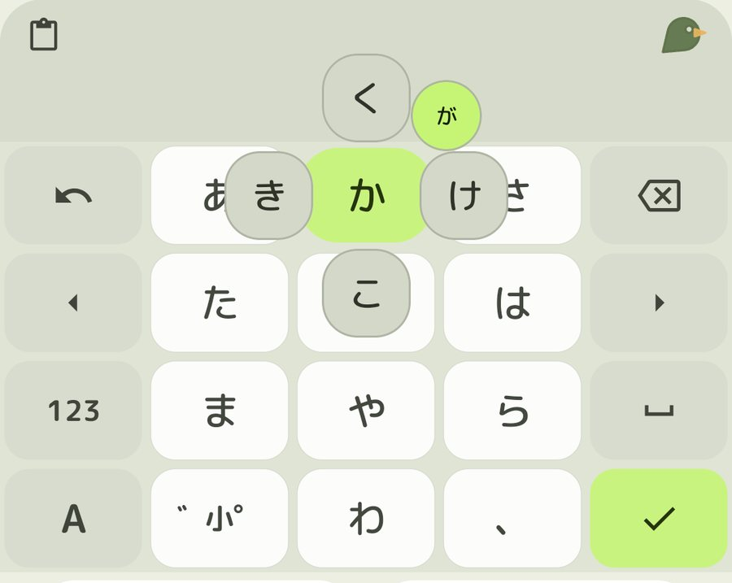
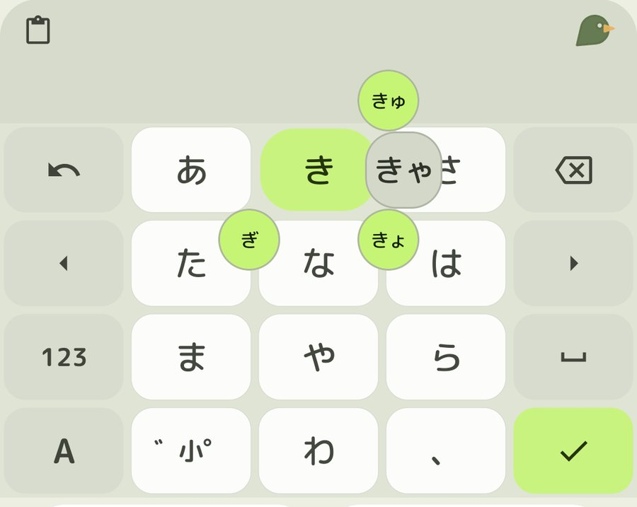
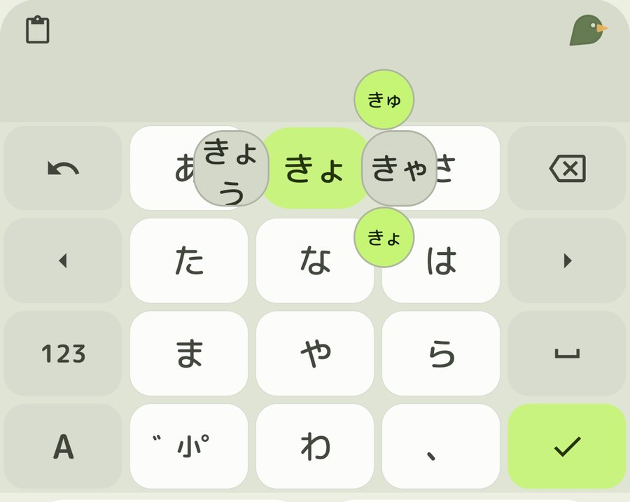
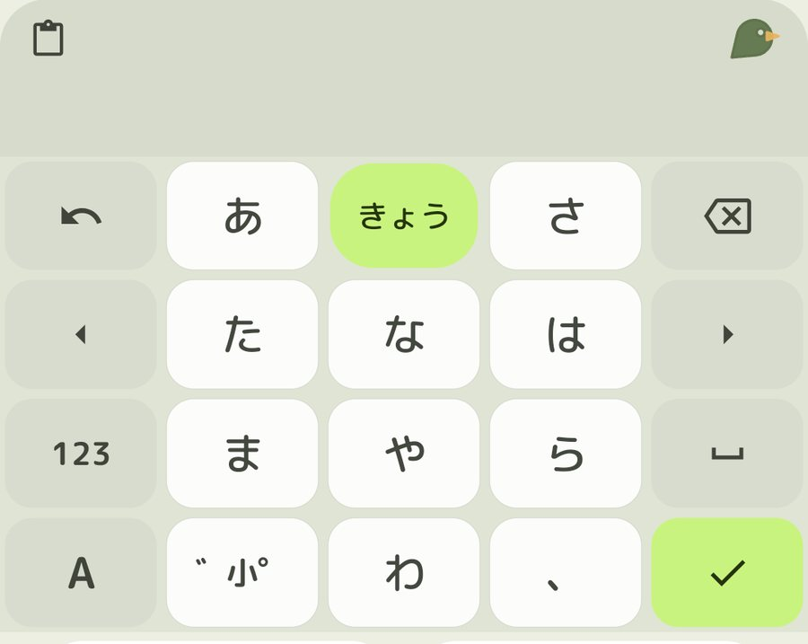
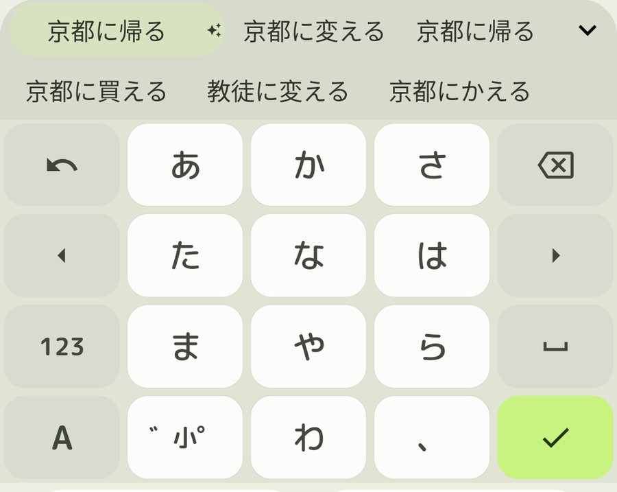
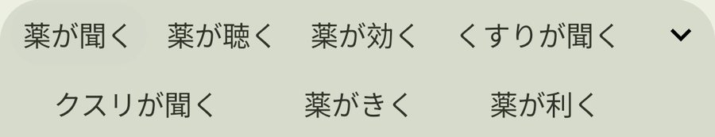
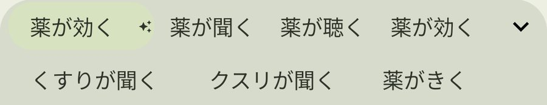
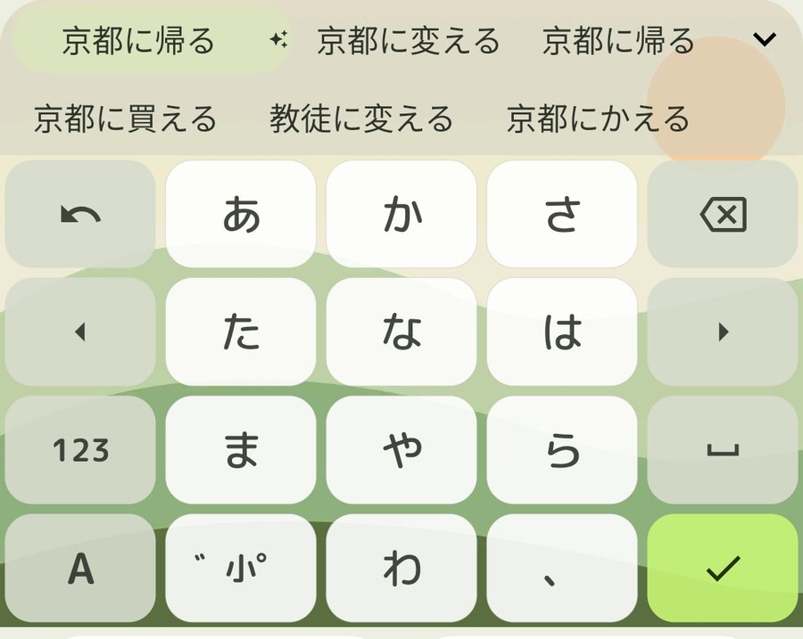
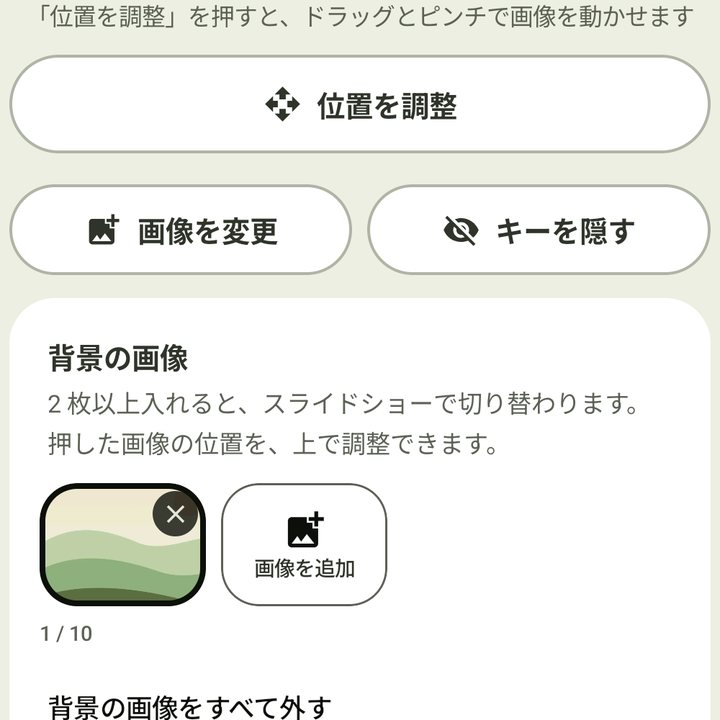
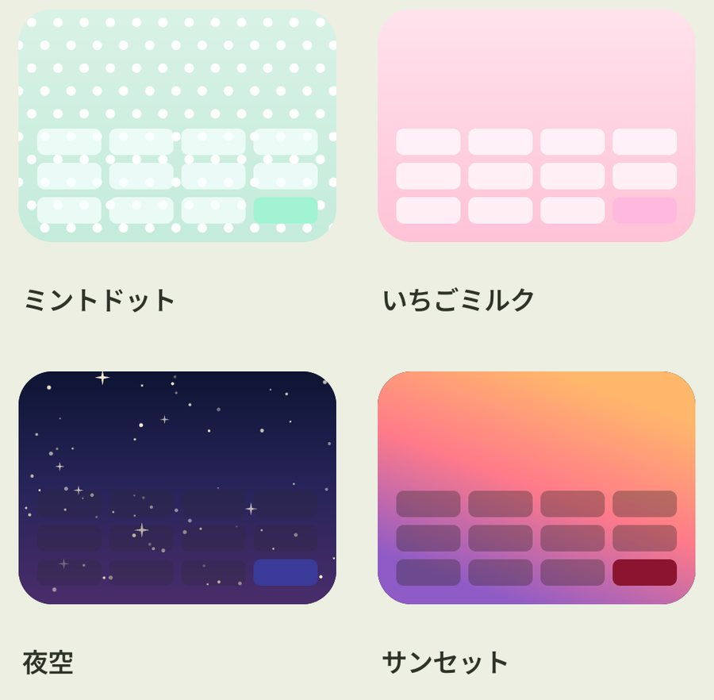

ことばを、
軽やかに。
ターンフリックと AI 超変換を、
Android でも iPhone でも。
指を曲げれば、濁音も拗音も、「きょう」までひと筆で打てます。変換は、文を読んで字を選び直します。どちらも端末の中で動き、打ったことばを外へ送りません。
ダウンロード Android 12 以降 iOS 17 以降





ターンフリック
曲げると、濁音も拗音も。
キーを押したまま上下左右へすべらせるのが、ふつうのフリックです。ターンフリックは、そこから指を曲げたぶんだけ、打てる文字が増えます。「゛」のキーへ指を運ぶ回数が減ります。
- 右上へ
- が 濁音。半濁音は左上へ
- 左へ行って、下へ曲げる
- ぎ い段・う段・え段・お段の濁音
- 左へ行って、右へ戻す
- きゃ・きゅ・きょ 戻す高さで選びます
- 上へ行って、下へ戻す
- かん ほかに「くう」「けん」「こん」
- 右へ戻して、もう一度左へ
- きゅう・きょう 拗音に「う」まで
濁音・拗音・そのほか（ターンフリック+）は、設定で別々に切り替えられます。フリックの広がりと長押しの時間も調整できます。
AI 超変換
文を読んで、字を選び直す。
辞書だけの変換は、となり合うことばのつながりやすさで字を選びます。そのため「くすりがきく」は、よく使われる「聞く」が先に出ます。
AI 超変換は、文をまるごと読める小さな言語モデルで、候補を選び直します。薬なら「効く」、本なら「厚い」。同じ読みの字を、文に合わせて選びます。
| 辞書だけ | AI 超変換 |
|---|---|
| 厚い本を読む | |
| 店を | 店を閉める時間 |
| 昨日車で送ってもらった | |
| 海の見える温泉宿に | 海の見える温泉宿に泊まりたい |
- モデルはアプリに入っていて、端末の中で動きます。通信を待たず、圏外でも変わりません
- 選び直しが外れることもあります。辞書の変換もとなりに並ぶので、そのまま選べます
- 選んだ候補を覚える学習、ユーザー辞書、定型文も使えます
表は、アプリと同じ辞書とモデルで変換した結果です。開発時の評価（1,745 文）では、いちばん上の候補が正解だった文が、辞書だけの 1,075 から 1,163 に増えました。
AI 超変換オフ

AI 超変換オン

きせかえ
指先に、好きな景色。
自分の写真や画像を選んで、キーボードの背景にできます。見本を見ながら、指で動かして位置と大きさを決めます。
- 10 枚まで入れられ、2 枚以上ならスライドショーで切り替わります
- ぼかしたり暗くしたりして、キーの字を読みやすくできます
- ミントドット、夜空、サンセットなど、用意された着せ替えからも選べます
- 選んだ画像は端末の中に置き、外へ送りません


自分の画像を選ぶ

用意された着せ替え
ほかにも。
- ライブ変換
- 打つそばから、変換した結果を入力欄に出します。設定でオンにできます。
- なぞり入力
- 英字のキーボードで、キーをなぞって単語を打てます。設定でオンにできます。
- クリップボードの履歴
- コピーしたものを、キーボードから貼り付けられます。長押しで辞書にも登録できます。
- バックアップと復元
- 設定、辞書、背景を 1 つのファイルに書き出せます。iOS と Android のあいだでも受け渡せます。
打ったことばは、外へ出しません。
キーボードは、パスワード以外のほとんどすべての入力を目にします。だから Kotori は、入力した内容をどこにも送りません。
iOS 版
通信する機能を持っていません。広告、利用状況の分析、クラッシュレポートのためのプログラムも入っていません。「フルアクセスを許可」は、オンにしなくても入力できます。
Android 版
入力した内容は送信しません。送るのは、同意をいただいた場合のクラッシュレポートだけで、設定でいつでも止められます。広告と、利用状況の分析はありません。
学習した語、ユーザー辞書、設定、背景の画像は、端末の中に保存します。パスワードの入力欄では、候補の表示も学習も行いません。
ダウンロード
iOS 版
TestFlight でテスト中です。iOS 17 以降の iPhone と iPad で動きます。ターンフリックも AI 超変換も使えます。
Android 版
公開の準備をしています。Android 12 以降で動きます。ターンフリックも AI 超変換も使えます。
どちらも無料です。公開の前に試していただける方を募っています。メールで、お使いの OS を添えてお知らせください。そのほかのお問い合わせも support@yuuki14202028.com まで。